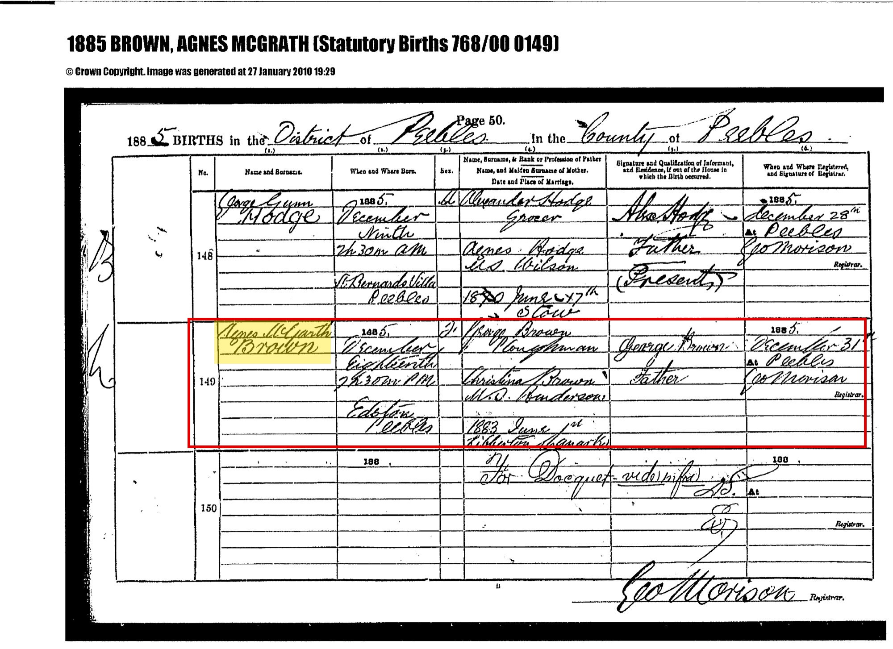

Birth of Agnes McGarth Brown, Peebles, 1885
Statutory register of births, District of Peebles, County of Peebles, 1885, page 50, entry 149 (768/00 0149). National Records of Scotland.

The entry is boxed in red and the names are highlighted. See the full page.

What this document is
A Scottish birth register entry. Every birth in Scotland had to be registered within a few weeks; the registrar wrote the child's name, date and place of birth, the parents, and the informant, who signed.
What it says
- Name: Agnes McGarth Brown, female.
- Born: December 18, 1885, 2:30 p.m., Edston, Peebles.
- Father: George Brown, ploughman.
- Mother: Christina Brown, maiden surname Henderson.
- Parents married: June 1, 1883, Libberton, Lanark.
- Informant: George Brown, father. Registered at Peebles, December 31, 1885, by Geo. Morison, registrar.
Why it matters
This is the birth of Laurence's mother. It names her parents, George Brown and Christina Henderson, and shows they were married at Libberton, the parish of Quothquan and Shieldhill, where her mother's family lived and where Agnes was raised after her parents died.
Crown copyright, National Records of Scotland. Image from ScotlandsPeople.